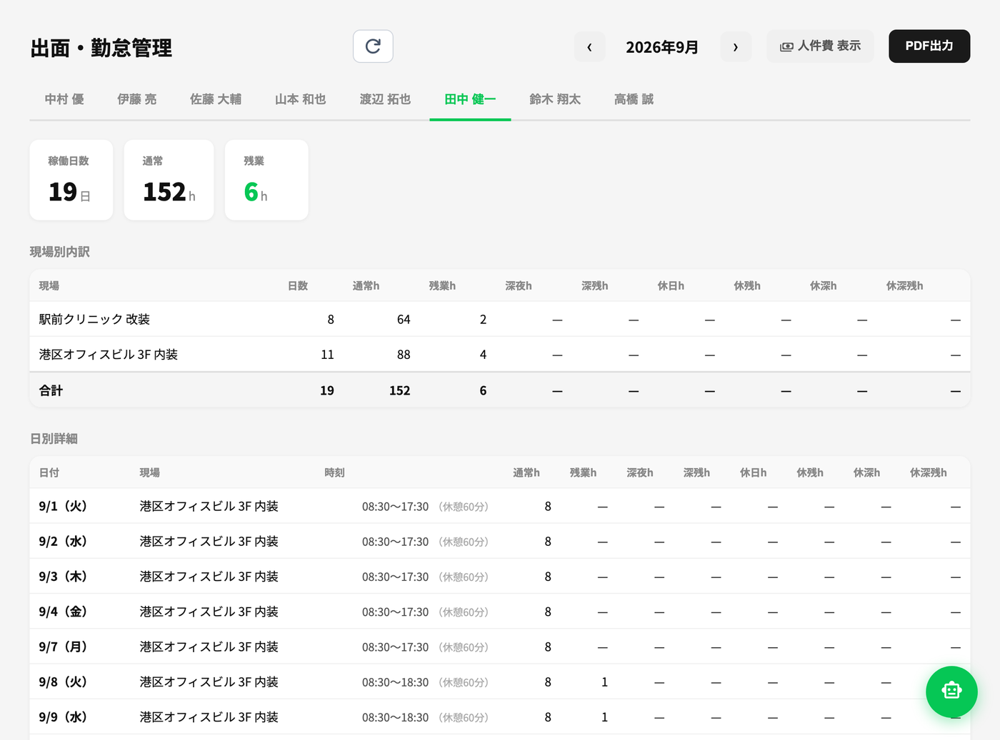
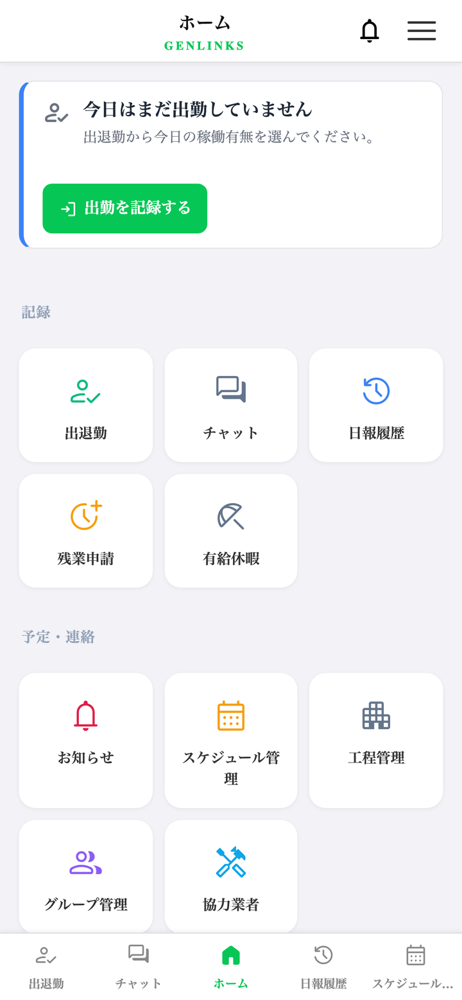
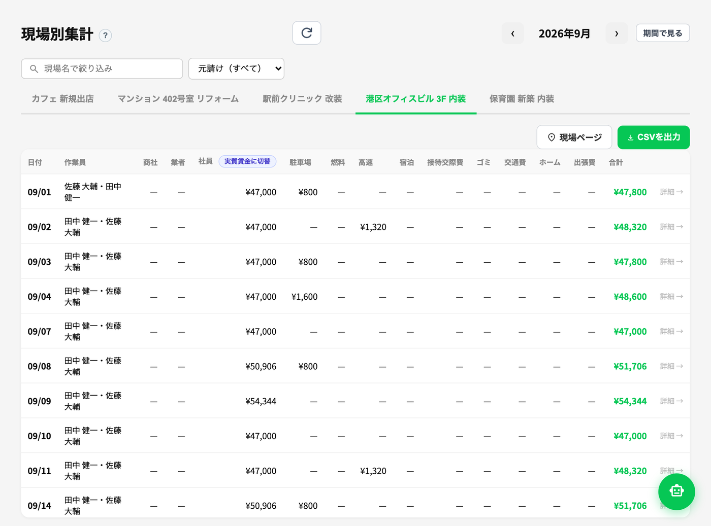
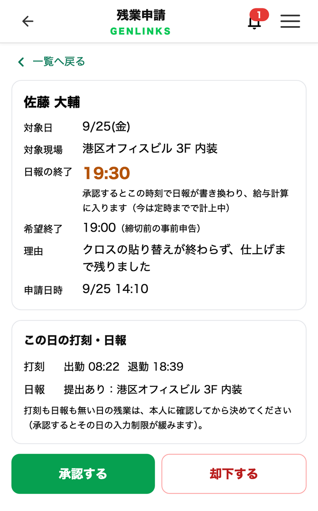

GENLINKS
工務店がつくった、現場のためのアプリ
現場の原価が、
その場で分かる。
職人さんはスマホで日報を出すだけ。
事務が減り、ルールも守られる。


日報を出すと、社長の画面に集まる
こんなこと、
ありませんか？
現場が終わるまで、儲かったのかどうか分からない
紙・LINE・Excel で届いた日報や経費を、毎日書き写している
その残業や経費が本当かどうか、確かめようがない
GENLINKS で変わること
変わるのは、
この 3 つです。
1数字が見える
どの現場で、
いくら使ったか。
工期の長い現場でも、今いくら使っているかがその場で分かります。人件費・経費・協力業者の請求を現場ごとにまとめるので、見積と実際の請求の食い違いにも、すぐ気づけます。
人件費の計算は、会社ごとに選べます
日当か、実際の時給か

2事務が減る
書き写しの伝言ゲームが、
なくなる。
日報・勤怠・経費を、紙やLINEから Excel へ何度も書き写す必要がなくなります。
直す時は、本人がスマホで直せます。
職人さん
スマホで日報を出す
現場・時間・経費・領収書の写真
自動でそろう
出面・
勤怠
勤怠
給与の
集計
集計
経費
精算
精算
- 事務員さんの手間が減る月末の書き写しや、合わない数字の確かめ直しがなくなり、ミスも減ります。
- 領収書は写真を撮るだけ金額や登録番号（インボイス）を読み取って入ります。
- 有給も自動で管理付与されると増えて、使えば減ります。本人もスマホで残りを見られます。
事務員さんの残業代を払うより、書き写しをなくして残業を減らす。
それだけで、利用料の元が取れます。
3規律ができる
職人さんを信じたい。
だから、仕組みで守る。
優しいだけだと、なあなあになる。
ルールが決まっていれば、正直な人が損をしません。
- 残業申請は、すぐ管理者のスマホへ何のための残業か、その場で確かめて相談できるので、無駄な残業が減ります。知らないところでの残業もなくなります。
- 打刻と日報を並べて確かめる出勤・退勤の打刻と日報の時刻を、承認の画面で並べて見られます。
- 経費は現場ごとに、その日のうちにどの現場の経費か、領収書の写真まで。毎日その場で出すので、領収書の出し忘れもなくなります。
- 締切後の修正は、理由と承認誰が・いつ・何を直したかも残ります。

ほかにも：見積・発注／工程表／現場チャット など
生まれた理由
現場の困りごとから、
生まれました。
GENLINKS は、職人さんを抱えるある工務店が、自社のためにつくったアプリです。日報や経費を LINE で集めて月末に書き写す手間、本当かどうか確かめられない残業や経費。職人さんを疑いたいのではなく、信じるために、仕組みで決めることにしました。
その工務店での、実際の数字
28人職人さん全員が
スマホで
スマホで
800件+毎月の
日報
日報
124件管理している
現場
現場
毎日の書き写し
約2時間 → ほぼゼロ
毎月の経費
15〜20万円 → 約10万円
経費を現場ごとに出すようにしてから（2026年6〜7月）
2026年5月から運用・数字は2026年9月時点
始め方は、かんたん
- 1お話を聞かせてください
- 2職人さんと現場を登録しますはじめだけ手間がかかります。登録はお手伝いします
- 3職人さんにURLを送るだけアプリストアからのインストールは要りません
- 4次の日から日報が集まります
よくある質問
職人さんに嫌がられませんか？（監視になりませんか？）
目的は見張ることではなく、ルールをはっきりさせることです。申請や修正の手順が決まっているので、職人さんも迷いません。
スマホが苦手な職人さんでも使えますか？
ほとんどは選ぶだけで、文字の入力は少しです。最初の使い方はお手伝いします。
パソコンが無くても使えますか？
社長や管理者も、スマホで日報や集計を見られます。表を広く見たい時は、パソコンが便利です。
まずはお試しから。
導入はお手伝いします。
GENLINKS